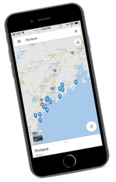
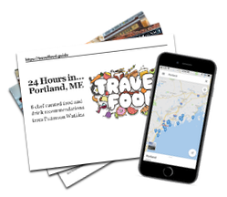
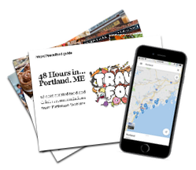
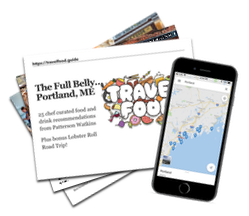
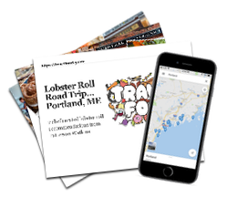

Portland, Maine
Grab your guide now to Portland, ME region! 4 versions available with up to 30+ chef-curated recommendations (including a special 8 location "Lobster Roll Road Trip").
Maine is nicknamed 'Vacationland' for a reason, and Portland is the chief destination for anybody seeking for incredible food experiences.
You have three main categories to look forward to on your New England food trip:

First, the Lobstah! 🦞. Our lists include up to 8 of the best lobster roll spots in the region, or you can pick up the "Ultimate Lobster Roll Road Trip" as a standalone guide! We tested ALL 8 of these spots in a marathon long weekend that we still brag about - an estimated 40 lbs of lobster between 4 people!
Second, the brews! Any beer aficionado already knows the Portland area has a high concentration of many top craft breweries in the country. Among the dozens you could choose from, we narrowed the list down to our 10 favorite experiences.
And last but certainly not least, is the creative culinary scene. Portland is home to some of the most creative chefs and restaurateurs on the entire east coast, making it the perfect spot for your next culinary vacation.
Our curated Portland, ME food guides give you up to 30+ chef-selected options for delicious destinations complete with gastronomic descriptions, tantalizing tips, and convenient Google Maps shortcuts (one click and 'poof' you'll have our Google maps loaded onto your device so you always know the tastiest spots nearby).
24 Hour Chef's Guide to Eating & Drinking Portland, ME
Just have 24 hours to spend in Portland? We've mapped out 8 of our 'can't be missed' favorites, making sure you can cover cover all the culinary bases.
You'll get to taste the freshest and most delicious examples of Maine seafood, including lobster, lobster rolls and oysters, and enjoy refreshing beers from two of our favorite iconic breweries.
And since Portland really knows breakfast, you'll get 2 amazing options to kick start your day.
This 24 Hour Chef's Guide includes:
- delicious dining recommendations (including our TOP recommendations for lunch and dinner)
- our favorite local craft breweries for you to tour and taste, walking distance from each other!
- our favorite spots to start the day with breakfast and a caffeine boost.
When you buy, you get a downloadable/printable guide to all 8 destinations, plus our easy-to-install Google Maps overlay.
New release price!
Get the 24 Hour Chef's Guide to Portland, ME for just $27 $17:
48 Hour Chef's Guide to Eating & Drinking Portland, ME
This 48 hour guide expands your selection from the 24 hour guide to 18 total options, including the best lobster roll I had in all of Maine, and an epic visit to 3 of our favorite breweries, all located within walking distance of each other.
You'll also get 2 of my top dinner selections: one is a literal farm to table restaurant (since it's located on a farm), the other highlighting local Maine ingredients to make delectable sushi delights.
This 48 Hour Chef's Guide includes
- delicious dining recommendations (including our TOP recommendations for lunch and dinner)
- our favorite local craft breweries for you to tour and taste, including three within walking distance from each other!
- our favorite spots to start the day with breakfast and a caffeine boost.
When you buy, you get a downloadable/printable guide to all 18 destinations, plus our easy-to-install Google Maps overlay.
New release price!
Get the 48 Hour Chef's Guide to Portland, ME for just $37 $27:
THE FULL BELLY - A 1 Week Chef's Guide to Eating and Drinking in Portland, ME
Our perfect week in Portland delivers it all: ☕️ our favorite breakfast spots to start every day right, 🦞 an 8-location lobster roll road trip, 🍻 our complete "brewery trail," 🍽 over a dozen of the best culinary experiences that showcase the best of New England's culinary talent
You get all of that and more in this 30+ destination list!
This FULL BELLY guide to Portland, ME includes:
- ALL of our delicious dining recommendations (including our TOP recommendations for lunch and dinner)
- ALL of our our favorite craft breweries
- ALL of our our favorite spots to start the day with breakfast and a caffeine boost.
When you buy, you get a downloadable/printable guide to all 31+ destinations, plus our easy-to-install Google Maps overlay.
New release price!
Get the FULL BELLY Chef's Guide to Portland, ME for just $47 $37:
🦞 SPECIAL! Ultimate Lobster Roll Road Trip standalone guide
For serious eaters only: this guide will have you stopping to get lobster rolls on your way to get lobster rolls.
8 recommended stops in total, this special standalone guide is also included in our Full Belly guide to Portland. But if all you want to do is stuff your face with lobster, this is the guide is for you.
This Ultimate Lobster Roll Road Trip includes our top 8 recommended lobster roll spots across the Portland ME region and THAT'S IT.
When you buy, you get a downloadable/printable guide to all 31 destinations, plus our easy-to-install Google Maps overlay.
New release price!
Get the Ultimate Lobster Roll Road Trip for just $17 $7:
Check out all of my favorite Travel Food cities:
Never wonder where you should go to eat.
Get on our list for expert foodie travel tips from Chef Patterson, and find out when our next food travel guide is available!
Special Thanks
Website Design inspired by Lauren Hallden's Travel Log.